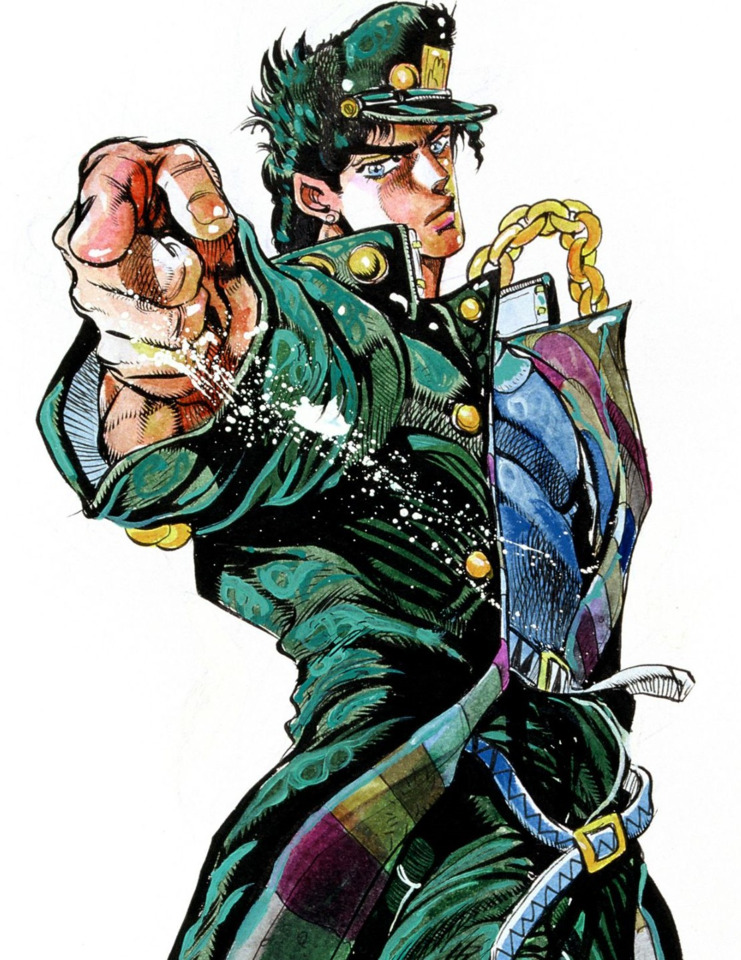
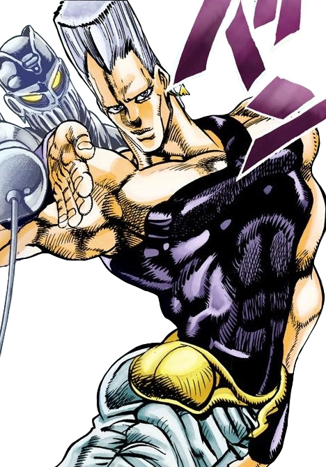

Stardust Crusaders is the third part of JoJo's Bizarre Adventure. It was serialized in Weekly Shonen Jump from 1989 to 1992 and adapted into an OVA series by Studio A.P.P.P. in 1993 and a 2014 anime adaptation by David Production. This part follows Jotaro Kujo, a Japanese teen, and his grandfather Joseph Joestar as they embark on a quest to kill their family's archenemy, Dio, in Cairo. The main conflict arises when Dio awakens Stands—the metaphysical manifestations of one's fighting spirit—in the Joestar bloodline, causing Jotaro's mother, Holly, to fall into a coma due to her inability to control her Stand.
To save Holly, Jotaro and Joseph travel to Cairo to find and kill Dio. Along the way, they face Dio's army of Stand users in a "fight of the week" format. At the end of their journey, accompanied by their companions Polnareff, Kakyoin, Avdol, and Iggy (a dog), the Crusaders confront Dio and his right-hand man, Vanilla Ice. Avdol and Iggy are killed by Vanilla Ice, who is ultimately defeated by Polnareff and his Stand, Silver Chariot. Meanwhile, Dio kills Kakyoin and puts Joseph into a coma but is eventually defeated by Jotaro and his Stand, Star Platinum. Jotaro uses his Stand's power to revive Joseph, and they return to Japan after bidding farewell to Polnareff.
The story begins with Jotaro Kujo in jail after beating up several people. His mother, Holly, calls her estranged father, Joseph, to help convince Jotaro to leave his cell. Jotaro refuses, believing he is possessed by an evil spirit. Accompanied by his fortune-telling companion, Muhammad Avdol, Joseph travels to Japan and reveals that the "spirit" haunting Jotaro is actually his Stand, a manifestation of his life force named Star Platinum.
Joseph explains that the emergence of Stands in their family is due to their archenemy, Dio, who grafted his head onto Jonathan Joestar's body and acquired a Stand. This caused his descendants to develop Stands as well. Using his Stand, Hermit Purple, Joseph takes a spirit photo of Dio. Jotaro deduces from the photo that Dio is in Egypt. Suddenly, Holly falls ill as her Stand manifests uncontrollably due to Dio's influence.
Determined to save her, Jotaro, Joseph, and Avdol set out on a journey to kill Dio. They are joined by Noriaki Kakyoin, who initially attacks Jotaro under Dio's influence but is freed after Jotaro defeats him.
On their way to Cairo, the Crusaders are ambushed by a Stand user, causing their plane to crash in Hong Kong. There, they recruit Jean Pierre Polnareff, who seeks revenge against Dio for the murder of his sister. The group continues their journey, battling Dio's Stand users in Singapore, Calcutta, Karachi, and other locations.
In Karachi, they confront Enya, the woman who gave Dio the Stand Arrow that started their journey. After defeating her, the Crusaders press on toward Egypt, facing more of Dio's forces. In Abu Simbel, they meet an agent of the Speedwagon Foundation who introduces them to Iggy, a Boston Terrier Stand user who becomes the final member of their group.
After challenging fights in the desert, the Crusaders finally reach Dio's mansion in Cairo. The group splits into two teams. Jotaro, Joseph, and Kakyoin face Telence T. D'Arby, while Polnareff, Avdol, and Iggy confront Dio's second-in-command, Vanilla Ice.
The second group suffers heavy losses, with Avdol and Iggy dying in the battle. Polnareff avenges them by killing Vanilla Ice. Meanwhile, Dio kills Kakyoin, who uses his last moments to reveal Dio's Stand ability: The World, which can stop time. Joseph realizes the significance of the broken clock in Kakyoin's final message, but Dio uses The World to incapacitate Joseph with a knife.
Jotaro discovers he can move during stopped time and engages Dio in a tense battle. Dio attempts to incapacitate Jotaro with a barrage of knives, but Jotaro feigns death by stopping his own heart. As Dio approaches for the final blow, Polnareff ambushes him and wounds him, but Dio recovers and mortally injures Polnareff.
Jotaro uses Dio's overconfidence against him, baiting him into overexerting himself. When Dio uses Joseph's blood to heal his wounds, the Hamon in the blood weakens him. During stopped time, Jotaro critically injures Dio and destroys The World, leading to Dio's final defeat.
Jotaro revives Joseph by restarting his heart with Star Platinum and the Crusaders bid farewell to Polnareff, who returned to France, while Jotaro and Joseph return to Japan, where Holly has recovered and is awaiting their return.


Comments